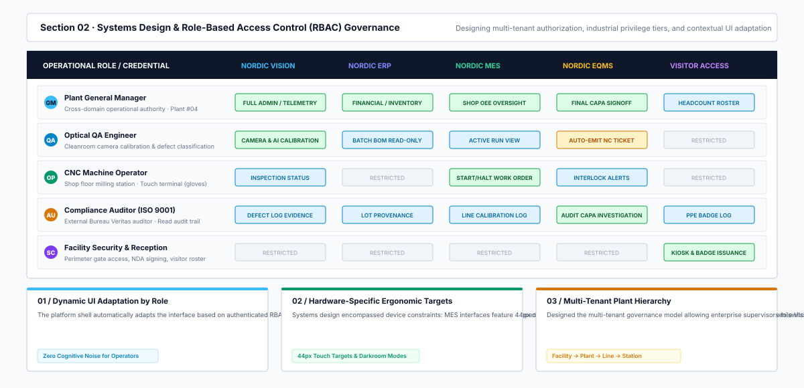
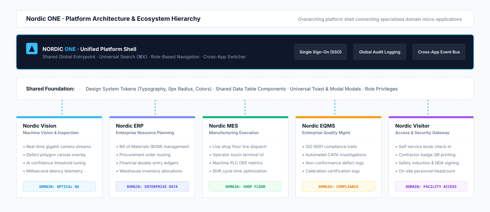
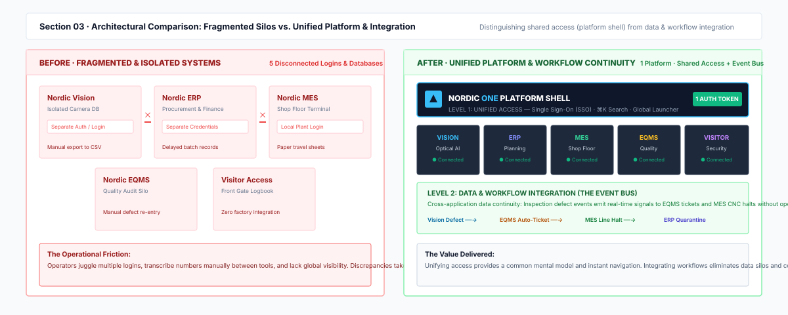
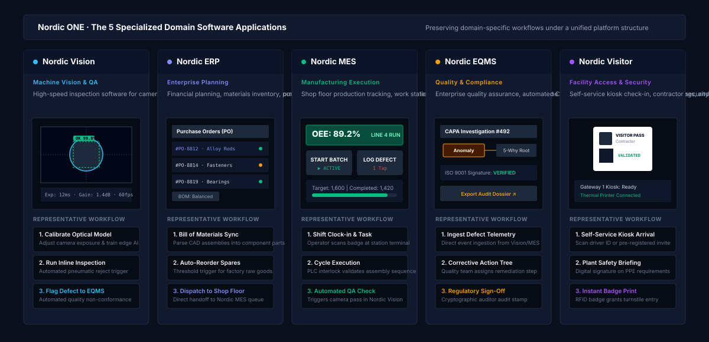
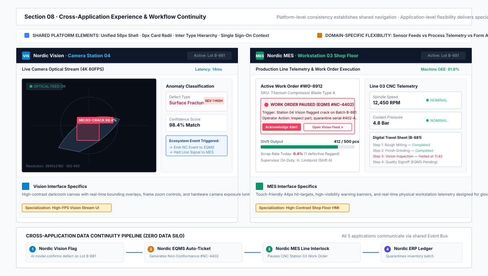
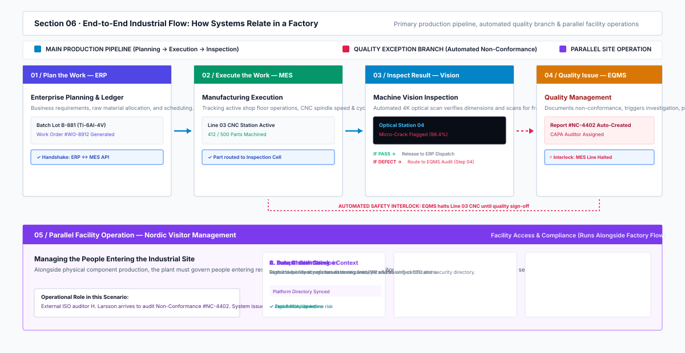
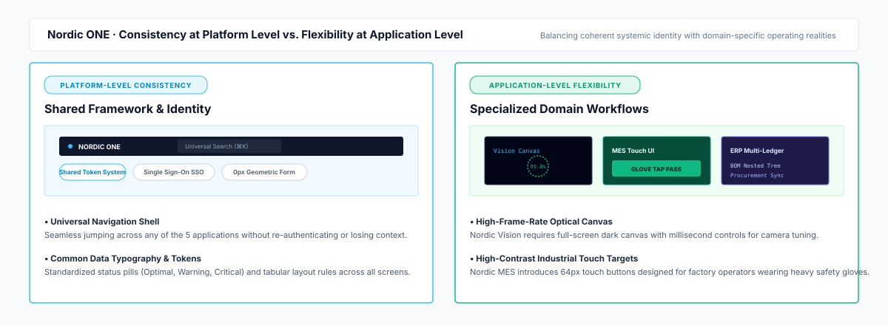
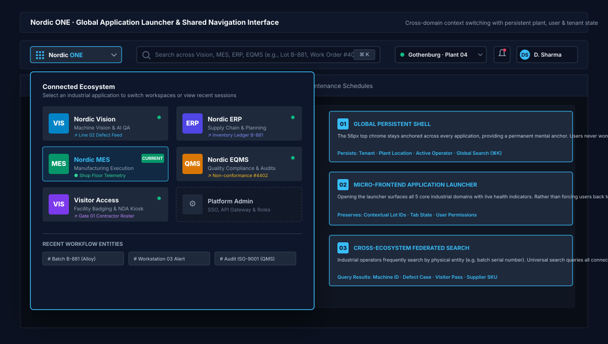
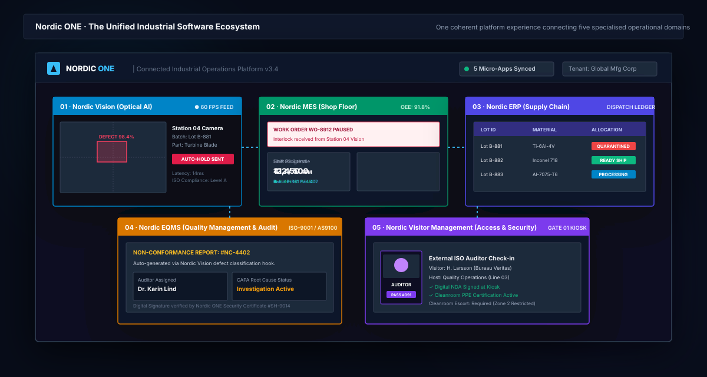

Federated Platform Architecture for Industrial Manufacturing Systems
Nordic ONE · Architecting a unified enterprise platform uniting machine vision inspection, MES floor telemetry, ERP resource planning, EQMS quality compliance, and facility security into a synchronized operational ecosystem.

Breaking down the operational silos between shop-floor telemetry and enterprise planning.
High-throughput manufacturing environments operate on five mission-critical digital layers: sub-millimeter optical defect inspection (Nordic Vision), enterprise resource planning (ERP), manufacturing execution (MES), quality compliance (EQMS), and physical perimeter security (Visitor Access).
In standard manufacturing plants, these systems exist as isolated software islands. When high-speed vision cameras detect a critical micro-crack on a machining line, downstream stations don't halt automatically. Operators manually re-key batch lot numbers across separate terminals, paper non-conformance logs circulate days late, and plant managers reconcile machine uptime in disconnected spreadsheets.
Nordic ONE was architected to eliminate these operational blindspots. As the lead systems and UI/UX designer working alongside one full-stack engineer and executive leadership, I designed the platform topology, federated micro-frontend shell, role-based access governance (RBAC), and shared design system that unified five disparate enterprise suites into a single real-time operational ecosystem.
Industrial software shouldn't force operators to act as human data bridges between isolated machines and enterprise ledgers.
Designing beyond interaction: systems architecture, role-based access, and operational governance.
My work on Nordic ONE extended far beyond surface interaction design. Industrial environments cannot function on visual polish alone—they require rigorous systems architecture, clear permission boundaries, and device-responsive ergonomics.
My role encompassed defining the structural foundation of the platform: how domain applications federate within a unified shell, how role-based access control (RBAC) dynamically adapts the UI across plant hierarchies, and how mission-critical workflows maintain state across five disparate software suites.
Systems Architecture & Federation
Defined the overarching platform topology connecting five domain applications under a shared micro-frontend shell with centralized SSO and global audit trails.
Role-Based Access Control (RBAC)
Architected the enterprise permission matrix—governing multi-tenant authorizations, dynamic UI redaction, and compliance privilege tiers across industrial roles.
Multi-Tenant Hierarchy & State
Structured facility-level hierarchies (Facility → Plant → Line → Station) and persistent cross-app entity state so operators never lose active context.
Industrial Ergonomics & Hardware
Engineered resilient interface standards for contrasting physical environments—from 44px rugged touch-targets on CNC factory floors to optical cleanroom darkrooms.
Shared Tokens & Component Foundation
Established the centralized 0px radius token library, accessible typography scales, shared data table components, and universal keyboard shortcuts across squads.
Workflow Continuity & Event Bus
Mapped end-to-end operational handshakes between physical shop-floor machinery, optical camera triggers, EQMS non-conformance tickets, and ERP inventory ledgers.


The cost of decoupled systems: Data latency, phantom inventory, and untracked scrap.
When manufacturing software operates as disconnected point solutions, operational friction compounds across shifts, stations, and departments:
1. Asynchronous Defect Propagation: When an optical camera flags a surface anomaly on Station 04, the defect is logged locally. The ERP remains blind to the rejection, continuing to commit raw materials to an already-compromised production order while scrap accumulates on the floor.
2. High-Stress Context Switching: Floor operators running high-speed CNC machinery must toggle between conflicting interfaces, incompatible hotkeys, and disconnected terminals, increasing cognitive fatigue and manual data-entry errors.
3. Retrospective Root-Cause Audits: Quality assurance leads investigating warranty claims spend days manually correlating camera image timestamps with physical paper travel sheets and supplier material heat certificates.
Unifying access (SSO and launcher) solves navigation friction; synchronizing data contracts and entity contexts eliminates operational downtime.

Five specialized enterprise suites. One synchronized operational context.
Each application within the Nordic ONE suite handles a dedicated tier of industrial plant management while adhering to a shared entity context:
Nordic Vision
Sub-millimeter optical inspection, AI defect classification, real-time edge camera streaming, and automated pass/fail line trigger gates.
Nordic ERP
Enterprise resource planning, multi-warehouse inventory allocation, supplier purchase orders, and real-time material cost ledgers.
Nordic MES
Manufacturing execution, live OEE (Overall Equipment Effectiveness) telemetry, machine status monitoring, and workstation cycle times.
Nordic EQMS
Enterprise quality management, automated non-conformance logging, CAPA root-cause workflows, and ISO/IATF compliance audit trails.
Visitor Access
Site perimeter security, contractor induction verification, hazardous cleanroom access control, and physical safety compliance.
The Shared Industrial Data Contract
In physical manufacturing, components don't exist in a vacuum—they are governed by a continuous physical lineage: Enterprise → Facility → Plant Line → Station → Work Order → Lot ID.
By enforcing this relational hierarchy across all five tools, Nordic ONE ensures that an optical defect flagged in Nordic Vision instantly halts work order routing in MES, triggers a non-conformance quarantine in EQMS, and flags inventory depreciation in ERP without manual human handoffs.

Designing across opposing ergonomic realities: Harsh shop floors vs. analytical back-office suites.
Unifying an enterprise industrial platform is not a cosmetic exercise of applying a single stylesheet across products. The five applications serve diametrically opposed physical and cognitive environments:
Shop Floor High-Velocity Execution (MES & Vision)
Operates under loud ambient noise, poor overhead lighting, and nitrile/leather PPE gloves. Requires 48px minimum tactile touch targets, high-contrast ISO status colors, zero decorative whitespace, and one-tap bypasses for line alarms.
Analytical Multi-Monitor Workstations (ERP & EQMS)
Operates in standard office environments on dual 4K desktop displays. Requires extreme data density, multi-level BOM trees, inline tabular cell editing, multi-parameter SQL filtering, and global keyboard shortcuts (⌘K).
The architectural challenge was creating a shared platform shell, unified typography, and cohesive component primitives without blunting the domain-specific efficiency each role demands.
How to architect a coherent platform shell and unified design language without sacrificing the extreme ergonomic specialization required on the factory floor.

Closed-loop production telemetry: From work order dispatch to automated quality containment.
Instead of manual paper handovers and batch spreadsheet reconciliations, Nordic ONE orchestrates an event-driven data loop connecting production, automated optical inspection, and enterprise planning in real time:
Work Order Dispatch
Allocates raw material batches, validates inventory availability, and commits scheduled work orders to active production lines.
Line Telemetry & Routing
Dispatches routing tasks to workstation touch terminals, capturing real-time machine cycle times, operator handoffs, and line OEE.
Sub-Millimeter Inspection
High-speed industrial cameras capture components at line speed, executing AI defect classification against millimeter CAD tolerances.
Automated Quarantine
An optical defect instantly halts downstream station indexing, auto-generates a non-conformance ticket, and locks the material lot.
Facility Safety Access
Controls technician and calibration contractor facility access, ensuring only certified personnel enter restricted cleanrooms.
Closed-Loop Telemetry vs. Batch Handoffs
The operational breakthrough of Nordic ONE is the real-time event loop. When Nordic Vision identifies a defect cluster on Line 02, it does not simply log an alert to a local monitor—it broadcasts an event across the platform shell, automatically halting work order progression in MES, generating an ISO non-conformance ticket in EQMS, and updating raw material scrap ledgers in ERP within milliseconds.

Systemic consistency without flattening domain autonomy.
A successful enterprise platform cannot force arbitrary visual uniformity on specialized tools. Instead, Nordic ONE enforces governance at the platform shell while preserving domain-specific execution speed:
Micro-Frontend Federation
Architected a zero-reload platform shell hosting independent domain micro-applications via Module Federation and shared state buses.
Persistent Entity State
Maintains persistent multi-tenant breadcrumbs (Facility → Plant → Line → Station) so operators never lose active context when switching tools.
0px Industrial Token Base
Engineered a precision design token foundation using 0px border radiuses, maximizing screen density and scannability on technical data tables.
Ergonomic UI Adaptation
Dynamically scales interaction targets between 48px rugged touch targets for floor tablets and compact desktop grids for office analysts.
Role-Based Dynamic Masking
Enforces RBAC permissions directly in UI components, redacting sensitive controls or financial ledgers based on active operator badge clearance.
Platform governance should provide shared authentication, entity context, and design tokens—never bottlenecking domain execution speeds.

Architecting the platform shell: Unified navigation, universal ⌘K command palette, and persistent context.
The platform shell acts as the operating system for the factory floor. Instead of a superficial portal launcher, the shell delivers four critical system-level capabilities:
Zero-Reload App Switching
Enables instant transitions between MES routing and Vision camera feeds via micro-frontends without losing active station state or re-authenticating.
Universal ⌘K Command Palette
Allows plant managers to query any Lot ID, Work Order, Machine Camera ID, or Supplier SKU across all five applications in under 200 milliseconds.
Multi-Tenant Plant Breadcrumbs
Anchors the operator's active physical context (Plant → Line → Station) permanently in the top chrome, eliminating accidental misconfiguration.
Dense Monospace Data Tables
Virtualized data grids engineered for 1,000+ row ERP and MES ledgers, featuring multi-column sorting, inline filtering, and millisecond rendering.

Deploying an industrial software ecosystem: Core systems architectural principles.
Architecting an overarching platform across five mission-critical manufacturing domains reinforced five foundational realities of industrial systems design:
Data Contracts Precede UI Polish
In enterprise software, visual consistency is useless if underlying schemas cannot exchange entity context. Normalizing data models (Plant → Station → Lot ID) is the true foundation of UX.
Physical Ergonomics Over Trends
Factory floor interfaces cannot tolerate decorative whitespace or low contrast. 0px border radiuses, monospace tabular grids, and 48px touch targets keep production lines operating safely.
RBAC is an Interaction Model
Role permissions shouldn't merely disable buttons—they must reshape the visual hierarchy so operators only see actionable controls certified for their active badge clearance.
Event Telemetry Prevents Scrap
Connecting machine vision and MES via a real-time event bus ensures defect quarantine occurs in milliseconds rather than being caught hours later during post-shift audits.
Lean Team Execution
Architecting five domain applications with one software developer and the CEO required ruthless token standardization, strict API contracts, and continuous shop-floor validation.
Nordic ONE proves that industrial software doesn't need to choose between enterprise robustness and intuitive usability. By treating the platform as a cohesive operating system, complex manufacturing workflows become faster, safer, and fully auditable.

Nordic ONE — Industrial Software Ecosystem
Systems Design · UI/UX Architecture · Role-Based Access Control (RBAC) · Enterprise Software
Explore other case studies
AERA
Improving clean air distribution in commercial workspaces through modular architectural air-purification.
View case study →GLIDE
Taking local businesses beyond the storefront with a transformable electric vehicle and pop-up retail system.
View case study →Nordic OS
Internal operations workspace connecting optical discovery, 9-stage engineering handoffs, and 11-role access.
View case study →Extra Work
Physical hardware consoles, vibe-coded canvas utilities, and foam ergonomics studies.
View explorations →